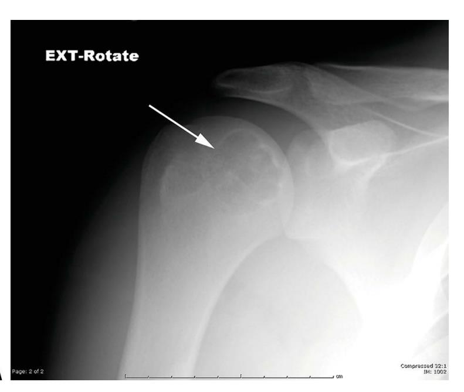

Terça, 3 de novembro de 2026Edição policialCaderno Tumores
Caso duplo · TEOT e TARO 2024
Mesma idade, mesmas alternativas: dois crimes, dois culpados
As duas provas perguntaram a mesma coisa sobre um rapaz de 15 anos com dor. Só a radiografia mudou, e a resposta mudou junto.
Prova 1 Coxa, TEOT 2024

Prova 2 Ombro, TARO 2024
Os suspeitos, os casos e o vereditoArraste →
As quatro alternativas das duas provas
Os suspeitos de sempre
Ficha 1Alternativa A
Osteossarcoma
Onde age
Metáfise
A marca que deixa
Destrói a cortical, forma osso e provoca reação periosteal agressiva
Ficha 2Alternativa B
Condroblastoma
Onde age
Epífise do esqueleto imaturo, dos 10 aos 25 anos
A marca que deixa
Lesão lítica, bem delimitada, com halo esclerótico
Ficha 3Alternativa C
Osteoma osteoide
Onde age
Jovem; fêmur proximal e tíbia
A marca que deixa
Cortical espessada que esconde um nicho; dor noturna que melhora com anti-inflamatório
Ficha 4Alternativa D
Tumor de células gigantes
Onde age
Epífise do esqueleto maduro, dos 20 aos 40 anos
A marca que deixa
Lesão lítica, em geral sem halo esclerótico
Caso 1: a coxa
Caso 1TEOT 2024
Paciente masculino, 15 anos, com dor na coxa. Com a imagem radiográfica a seguir, a principal hipótese diagnóstica é
Aosteossarcoma.
Bcondroblastoma.
Costeoma osteoide.
Dtumor de células gigantes.
Quem foi? Anote a sua letra e arraste.
Caso 2: o ombro
Caso 2TARO 2024
Paciente masculino, 15 anos, com dor no ombro. Imagem de radiografia a seguir. A principal hipótese diagnóstica é
Aosteossarcoma.
Bcondroblastoma.
Costeoma osteoide.
Dtumor de células gigantes.
Mesmas quatro. Outro culpado?
Caso 1 resolvido · coxa · TEOT 2024
Cortical grossa entrega o autor da dor na coxa
12
C
GabaritoOsteoma osteoide
1Espessamento cortical fusiforme na face medial do fêmur, logo abaixo do trocanter menor.
2A esclerose densa esconde o nicho; a tomografia mostra o nicho, com menos de 1,5 cm.
3O perfil: jovem, com dor noturna que melhora com anti-inflamatório, porque a lesão produz prostaglandinas.
Os álibis
Osteossarcoma: teria lesão metafisária destrutiva e reação periosteal agressiva. Condroblastoma e tumor de células gigantes: são epifisários.
Culpado
Caso 2 resolvido · ombro · TARO 2024
Na epífise de um rapaz de 15 anos, o culpado é outro
12
B
GabaritoCondroblastoma
1Lesão lítica, bem delimitada, com borda esclerótica fina.
2Fica na epífise da cabeça umeral, logo acima da fise.
3Aos 15 anos o esqueleto é imaturo: epífise no imaturo é condroblastoma até prova em contrário.
Os álibis
Tumor de células gigantes: epifisário, mas do esqueleto maduro e em geral sem halo. Osteossarcoma: metafisário e agressivo. Osteoma osteoide: nicho pequeno na esclerose densa.
Culpado
A regra do delegado
Idade e local resolvem quase tudo
Epífise, esqueleto imaturoCondroblastoma
Epífise, esqueleto maduroTumor de células gigantes